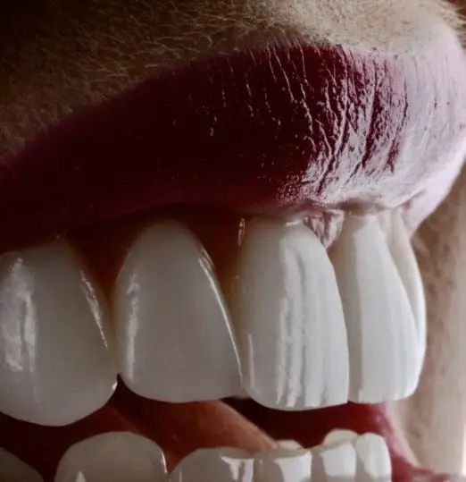
A base
Periodontia
Saúde e contorno da gengiva. É o que define até onde a estética pode chegar — e vem antes dela.
São Paulo · Liberdade — e Rio Branco, AC
Na D'avila's Concept, cada caso passa por um planejamento digital que cria o avatar do seu sorriso. Você decide com a imagem na tela — não com uma promessa.
O diferencial
A boca é escaneada e o sorriso é reconstruído digitalmente. Na mesma tela você vê o ponto de partida, o resultado projetado e o caminho entre os dois — com a sequência de etapas e o tempo de cada uma.
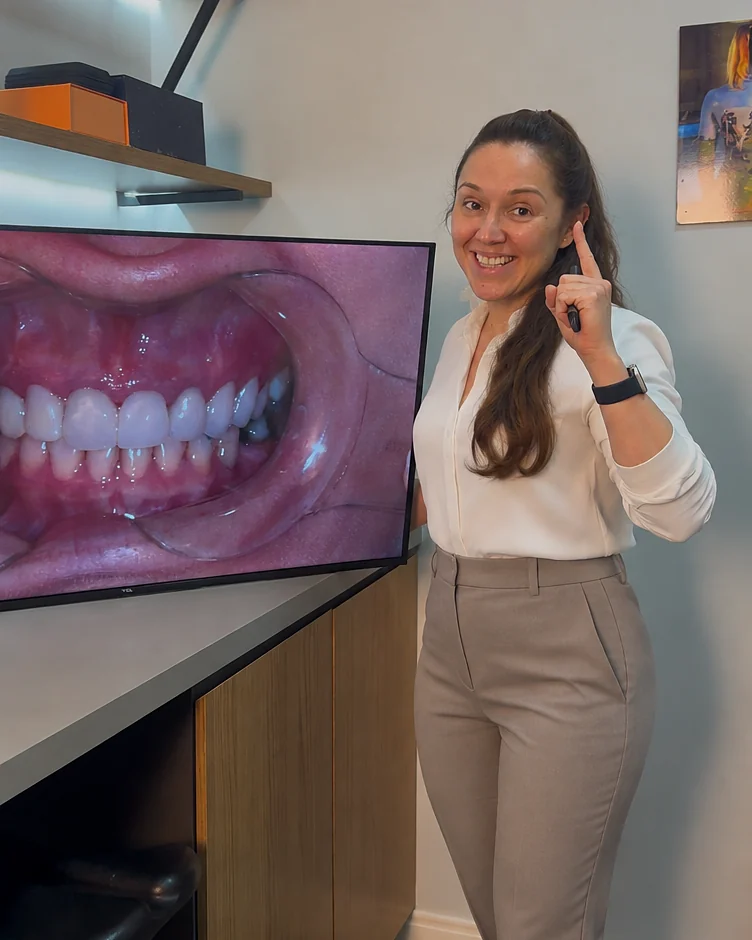
Especialidades
Gengiva inflamada compromete a cerâmica. Dente ausente sobrecarrega os vizinhos. Mordida desalinhada lasca o trabalho novo. Por isso o diagnóstico avalia as quatro frentes juntas e define, caso a caso, a ordem em que elas entram.

Saúde e contorno da gengiva. É o que define até onde a estética pode chegar — e vem antes dela.
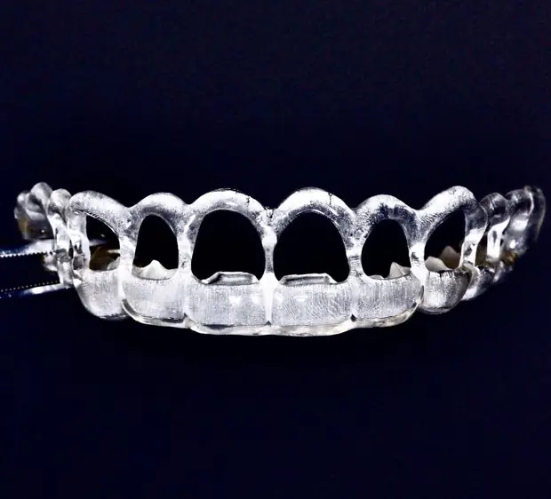
Dentes na posição certa exigem menos desgaste depois. Muitas vezes é o caminho mais conservador para o resultado estético.
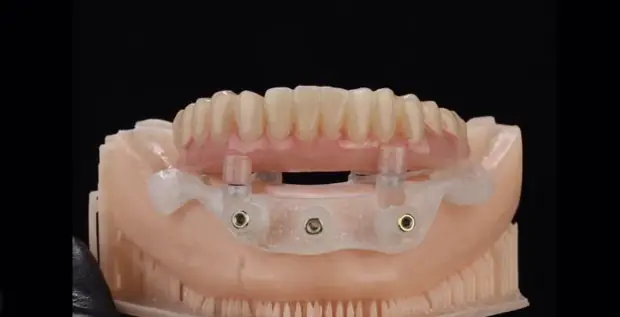
Reposição de dentes ausentes, do elemento unitário à prótese total. Sem estrutura, não há estética duradoura.
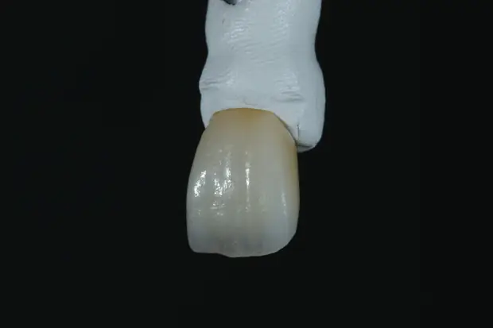
Lentes, facetas e coroas em cerâmica — a última etapa, executada sobre uma base já resolvida.
O método
Nenhuma etapa começa antes de a anterior estar fechada. É o que evita retrabalho, cerâmica que lasca e orçamento que cresce no meio do caminho.
Exame clínico, fotografias, radiografias e leitura da mordida. Você entende o que existe hoje antes de ouvir qualquer proposta.
Escaneamento e planejamento digital. O resultado projetado é apresentado a você, com escopo, sequência e investimento definidos.
As etapas seguem a ordem do plano. Nos casos estéticos, prova na própria boca antes de qualquer peça definitiva.
Controles periódicos e registro de acompanhamento. Alto padrão é o que continua bom depois do segundo ano.
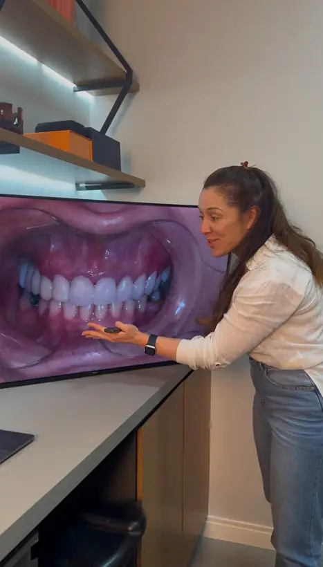
Quem conduz
Cirurgiã-dentista responsável pela D'avila's Concept. Conduz pessoalmente o diagnóstico, o planejamento digital e a execução de cada caso nas duas unidades.
D'avila's Concept
Registros da clínica
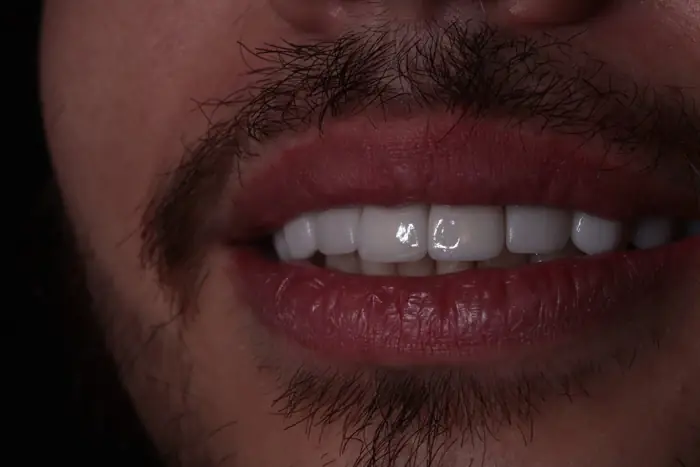
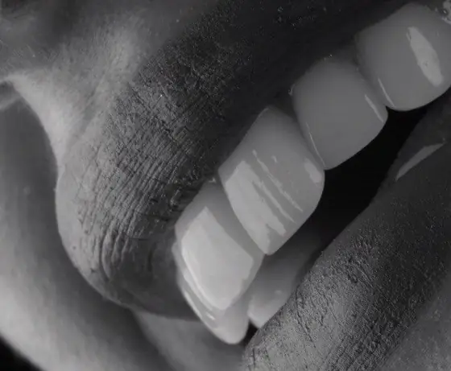
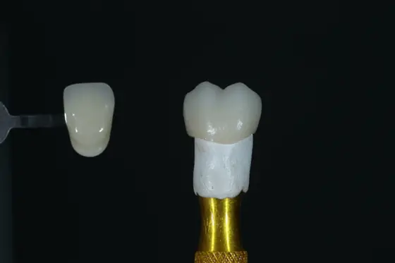
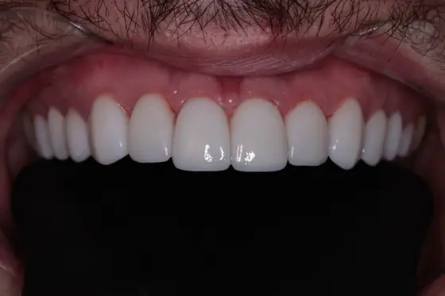
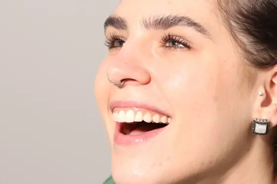
Registros de casos reais conduzidos na clínica. Cada caso tem condições clínicas próprias — o resultado possível é definido em avaliação individual e não pode ser garantido previamente.
Unidades
São Paulo — SP
Unidade Liberdade
Rua Galvão Bueno, 412Rio Branco — AC
Unidade Cerâmica
Travessa Rio Branco, 684 — sala 02Antes de agendar
Próximo passo
Agende pelo WhatsApp e escolha a unidade. Respondemos em horário comercial.
Falar com a clínica